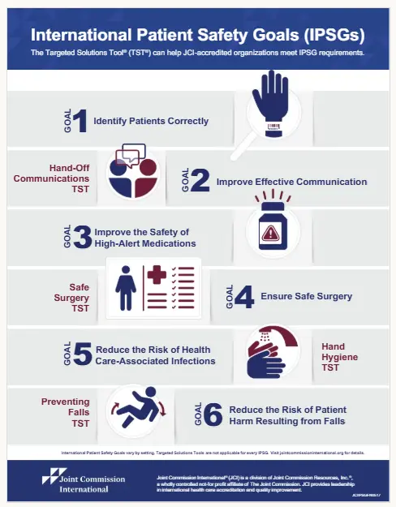

High-Alert Medications (HAM)
What are High-Alert Medications (HAM)?
High-Alert Medications (HAM) are those that present a higher risk of causing serious or even fatal harm to the patient when administered incorrectly, even when standard procedures are used. Therefore, these medications require additional care in their storage, prescription, preparation, dispensing, and administration.
The Ministry of Health and international organizations, such as the Institute for Safe Medication Practices (ISMP), point out that these medications are not necessarily more dangerous by nature, but any error related to them is more likely to cause significant harm.
Commonly considered high-alert medications include:
- Insulin
- Anticoagulants (such as heparin)
- Opioids
- Concentrated potassium chloride
- Chemotherapeutics
- Neuromuscular blockers
- Hypertonic sodium solutions
- Potent anesthetic drugs
Recommended Practices for Safe Use
- Identification with special label (“High Risk” or “High Alert”)
- Separate storage from other medications
- Double Check before administration
- Clear standardization and labeling
- Continuous education of the healthcare team
International Patient Safety Goal #3, promoted by the World Health Organization (WHO) and incorporated in Brazil by the National Patient Safety Program (PNSP), guides healthcare services to adopt specific practices to increase safety in the prescription and use of these medications.
References:
- Institute for Safe Medication Practices (ISMP). ISMP List of High-Alert Medications in Acute Care Settings. 2022.
- The Joint Commission. Medication Management: High-Alert Medications. 2024.
